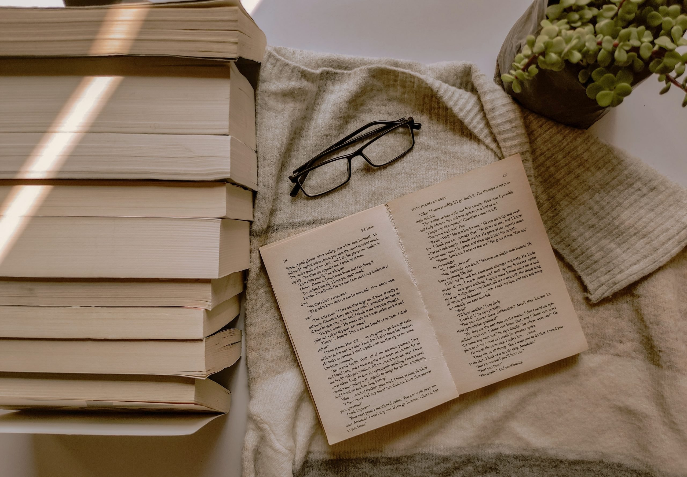

"You can never get a cup of tea large enough or a book long enough to suit me." - C.S. Lewis
It turns out C.S. Lewis and I have a lot in common. My name is Pratiksha and one of my greatest joys in life is curling up with a good book and a cup of tea. I've always loved to read, though as I progressed through life, reading often took a back burner as school became more demanding. To combat this, I have been making it a conscious effort to stay consistent with reading, and one way I do this is by establishing reading goals (for 2022, I am aiming to read 30 books). Another way I found I was able to stay consistent with reading was through hosting and participating in book clubs with my friends! I've always loved engaging with others on my favourite books, and continuing this practice in a more intentional, structured way through a book club not only helped me stay consistent with reading, it also fostered my intellectual curiousity, opened me up to diverse viewpoints, and helped me get to know my friends better. The goal of blog is to track my reading journey and bring along anyone else who may be interested. Here, I will update my TBR list, review recent reads, and have a space to join my book club!
A little about my reading journey...
In the 5th grade, my teacher read Harry Potter and the Philosopher's Stone to the class. I had no idea books could be so transporting, vivid, and fun. I read through the rest of the series on my own, and I was hooked. Not long after that the YA genre really took off with other series' like Percy Jackson, Twilight, and the Hunger Games. These books had a loyal, expansive, and highly enthusiastic fanbase, which made books not only a place of quiet escape, but also collective experience that I found incredibly gratifying. This impact of these popular YA series' so early on in my life made books a central force in my life. So although those series may seen juvenile, they were really a gateway to a world of words, and I haven't looked back since.